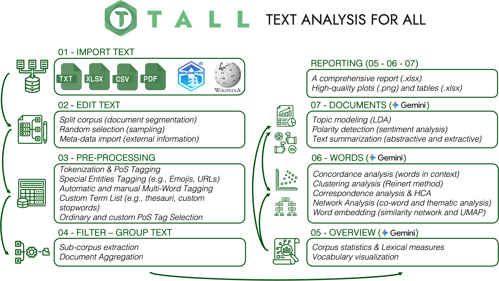

An interactive R‑Shiny application that unifies import, cleaning, pre‑processing, statistical analysis and visualisation of textual data — designed so researchers without programming skills can move from raw text to interpretable results in minutes.
Analyzing unstructured textual data is essential across disciplines — yet often requires programming skills many researchers lack. TALL bridges the gap by integrating data import, cleaning, pre‑processing, statistical analysis, and visualisation into a single Shiny application.
It supports tokenisation, lemmatisation, and Part‑of‑Speech tagging across 56 languages, and offers topic modeling, correspondence and cluster analysis, co‑occurrence networks, polarity detection, word embeddings, and text summarisation — all documented, exportable, and reproducible by design.
The framework is FAIR‑compliant, open‑source under the MIT license, and available on CRAN. Performance‑critical routines are implemented in C++ via Rcpp, enabling scalable analysis of corpora spanning four orders of magnitude in size on standard research hardware.
A native integration with Google Gemini — TALL AI — produces context‑aware natural‑language explanations alongside each numerical output, while preserving strict data minimisation: raw textual content never leaves the user's environment.

Fourteen integrated modules covering exploratory, inferential and interpretive methods. Each can be run independently or chained into a continuous analytical narrative; intermediate results are exportable at every step.
See all modulesUniversal‑Dependencies‑based pipelines for 56 languages, implemented via udpipe, with models cached locally for offline use.
Four collocation algorithms — including RAKE and Pointwise Mutual Information — for identifying salient n‑grams and candidate keyphrases. C++‑accelerated.
LDA with CTM and STM methods, automatic K selection, coherence & exclusivity diagnostics. Parallelised through future.
Co‑occurrence networks with Louvain community detection, dependency‑based word graphs, and syntactic relation filters via igraph and visNetwork.
Train Word2Vec representations directly on your corpus; visualise semantic neighbourhoods via UMAP.
Sentiment dashboards using Hu‑Liu, Loughran‑McDonald, and NRC Emotion Lexicon (8 emotions: anger, anticipation, disgust, fear, joy, sadness, surprise, trust).
Extractive (TextRank) and abstractive summarisation, Subject‑Verb‑Object triplet extraction from dependency trees, syntactic complexity, noun phrase extraction, Reinert clustering, correspondence analysis, keyness.
The milestone release that accompanies our SoftwareX paper: seven new analytical modules, overhauled AI integration, and a documented performance story.
Extract Subject‑Verb‑Object structures from dependency trees to reveal who does what to whom across your corpus.
Dependency‑tree metrics for measuring and comparing sentence construction across documents and groups.
Eight‑dimensional emotion profiles via the NRC Emotion Lexicon — well beyond binary polarity.
Identify and rank noun phrases to complement single‑word frequency analysis with concept‑level views.
CTM and STM methods added, plus automatic K selection and diagnostics based on coherence & exclusivity.
Dependency‑based word networks with filters over syntactic relations (subject, object, modifier…).
Commercial platforms are often proprietary and costly; open‑source alternatives are frequently limited by legacy interfaces or rigid data formats. TALL extends the open‑source ecosystem by combining the flexibility of R packages with Shiny's interactivity — every analytical step is documented, reproducible and exportable.
| Feature | TALL | IRaMuTeQ | KH Coder | quanteda | AntConc |
|---|---|---|---|---|---|
| Multilingual support | |||||
| Languages supported | 56 | ~10 | 13 | — | — |
| Pre‑trained models | 87 | None | None | None | None |
| PoS tagging & lemmatisation | ✓ | ✓ | ✓ | — | — |
| Analytical methods | |||||
| Topic modeling (LDA/CTM/STM) | ✓ | — | — | Partial | — |
| Word embeddings | ✓ | — | — | — | — |
| Sentiment analysis | ✓ | — | — | — | — |
| Reinert clustering | ✓ | ✓ | — | — | — |
| AI & reproducibility | |||||
| AI‑assisted interpretation | ✓ | — | — | — | — |
| FAIR‑compliant | ✓ | Partial | Partial | ✓ | — |
| Last major update | 2026 | 2020 | 2017 | 2025 | 2024 |
Adapted from Aria et al. (2026), Table 1. Full comparison available in the paper.
The full description of TALL — architecture, benchmarks, illustrative examples — is published as an open‑access Elsevier SoftwareX article. Please cite it if you use TALL in your research.
Ready to analyse your first corpus?